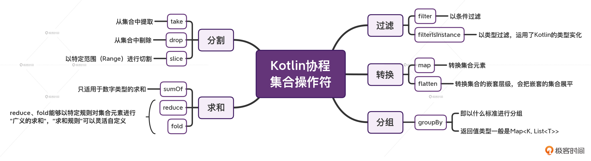

Audio集合操作符：你也会“看完就忘”吗？
你好，我是朱涛。
从这节课开始，我们就正式进入源码篇的学习了。当我们学习一门知识的时候，总是离不开 What、Why 和 How。在前面的基础篇、协程篇当中，我们已经弄清楚了 Kotlin 是什么，以及为什么要用 Kotlin。那么在这个模块里，我们主要是来解决 How 的问题，以此从根源上搞清楚 Kotlin 的底层实现原理。今天这节课，我们先来搞定集合操作符的用法与原理。
对于大部分 Java、C 开发者来说，可能都会对 Kotlin 的集合操作符感到头疼，因为它们实在太多、太乱了。即使通过 Kotlin 官方文档把那些操作符一个个过了一遍，但过一段时间在代码中遇到它们，又会觉得陌生。一看就会，看完就忘！
其实，Kotlin 的集合 API，本质上是一种数据处理的模式。
什么是数据处理模式？可以想象一下：对于 1~10 的数字来说，我们找出其中的偶数，那么这就是一种过滤的行为。我们计算出 1~10 的总和，那么这就是一种求和的行为。所以从数据操作的角度来看，Kotlin 的操作符就可以分为几个大类：过滤、转换、分组、分割、求和。
那么接下来，我会根据一个统计学生成绩的案例，来带你分析 Kotlin 的集合 API 的使用场景，对于复杂的 API，我还会深入源码分析它们是如何实现的。这样你也就知道，集合操作符的底层实现原理，也能懂得如何在工作中灵活运用它们来解决实际问题。
好，让我们开始吧！
场景模拟：统计学生成绩
为了研究 Kotlin 集合 API 的使用场景，我们先来模拟一个实际的生活场景：统计学生成绩。
data class Student(
val name: String = "",
val score: Int = 0
)
val class1 = listOf(
Student("小明", 83),
Student("小红", 92),
Student("小李", 50),
Student("小白", 67),
Student("小琳", 72),
Student("小刚", 97),
Student("小强", 57),
Student("小林", 86)
)
val class2 = listOf(
Student("大明", 80),
Student("大红", 97),
Student("大李", 53),
Student("大白", 64),
Student("大琳", 76),
Student("大刚", 92),
Student("大强", 58),
Student("大林", 88)
)这里我们定义了一个数据类 Student，然后有一个集合，当中对应的就是学生的名字和成绩。
接下来，我们就以这个场景来研究 Kotlin 的集合 API。
过滤
比如说，我们希望过滤 1 班里不及格的学生，我们就可以用 filter{} 这个操作符，这里的 filter 其实就是过滤的意思。
private fun filterNotPass() {
val result = class1.filter { it.score < 60 }
println(result)
}
/*
[Student(name=小李, score=50), Student(name=小强, score=57)]
*/以上代码段的逻辑很简单，读起来就像英语文本一样，这里我们重点来看看 filter{} 的源代码：
public inline fun <T> Iterable<T>.filter(predicate: (T) -> Boolean): List<T> {
// 创建了新的ArrayList<T>()集合
return filterTo(ArrayList<T>(), predicate)
}
public inline fun <T, C : MutableCollection<in T>> Iterable<T>.filterTo(destination: C, predicate: (T) -> Boolean): C {
for (element in this) if (predicate(element)) destination.add(element)
return destination
}可以看到 filter{} 其实是一个高阶函数，它只有唯一的参数“predicate: (T) -> Boolean”，这就是它的过滤条件及过滤标准，只有符合这个过滤条件的数据才会被保留下来。
而且，对于 List.filter{} 来说，它的内部还会创建一个新的 ArrayList<T>()，然后将符合过滤条件的元素添加进去，再返回这个新的集合。
而除了 filter{} 以外，Kotlin 还提供了 filterIndexed{}，它的作用其实和 filter{} 一样，只是会额外带上集合元素的 index，即它的参数类型是“predicate: (index: Int, T) -> Boolean”。
// 12讲当中的代码
inline fun <reified T> create(): T {
return Proxy.newProxyInstance(
T::class.java.classLoader,
arrayOf(T::class.java)
) { proxy, method, args ->
return@newProxyInstance method.annotations
// 注意这里
.filterIsInstance<GET>()
.takeIf { it.size == 1 }
?.let { invoke("$baseUrl${it[0].value}", method, args) }
} as T
}
// inline + reified = 类型实化
// ↓ ↓
public inline fun <reified R> Iterable<*>.filterIsInstance(): List<@kotlin.internal.NoInfer R> {
return filterIsInstanceTo(ArrayList<R>())
}
// inline + reified = 类型实化
// ↓ ↓
public inline fun <reified R, C : MutableCollection<in R>> Iterable<*>.filterIsInstanceTo(destination: C): C {
for (element in this) if (element is R) destination.add(element)
return destination
}可以看到，filterIsInstance 的源代码逻辑也非常简单，其中最关键的，就是它借助了 inline、reified 这两个关键字，实现了类型实化。这个知识点我们在 12 讲当中也介绍过，它的作用就是让 Kotlin 的“伪泛型”变成“真泛型”。
好，Kotlin 集合 API 当中的过滤操作我们也就分析完了。接下来我们看看转换API。
转换
现在，我们还是基于学生成绩统计的场景。不过，这次的需求是要把学生的名字隐藏掉一部分，原本的“小明”“小红”，要统一变成“小某某”。
那么对于这样的需求，我们用 map{} 就可以实现了。
private fun mapName() {
val result = class1.map { it.copy(name = "小某某") }
println(result)
}
/*
[Student(name=小某某, score=83),
Student(name=小某某, score=92),
Student(name=小某某, score=50),
Student(name=小某某, score=67),
Student(name=小某某, score=72),
Student(name=小某某, score=97),
Student(name=小某某, score=57),
Student(name=小某某, score=86)]
*/这里需要注意，虽然 map 这个单词的意思是“地图”，但在当前的语境下，map 其实是转换、映射的意思，这时候，我们脑子要想到的是 HashMap 当中的 map 含义。
另外，map 的源码也很简单：
public inline fun <T, R> Iterable<T>.map(transform: (T) -> R): List<R> {
return mapTo(ArrayList<R>(collectionSizeOrDefault(10)), transform)
}
public inline fun <T, R, C : MutableCollection<in R>> Iterable<T>.mapTo(destination: C, transform: (T) -> R): C {
for (item in this)
destination.add(transform(item))
return destination
}本质上，map 就是对每一个集合元素都进行一次 transform() 方法的调用，它的类型是“transform: (T) -> R”。
除了 map 以外，还有一个比较有用的转换 API，flatten。它的作用是将嵌套的集合“展开、铺平成为一个非嵌套的集合”。我们来看一个简单的例子：
private fun testFlatten() {
val list = listOf(listOf(1, 2, 3), listOf(4, 5, 6))
val result = list.flatten()
println(result)
}
/*
[1, 2, 3, 4, 5, 6]
*/假设，我们现在想要过滤出 1 班、2 班当中所有未及格的同学，我们就可以结合 flatten、filter 来实现。
private fun filterAllNotPass() {
val result = listOf(class1, class2)
.flatten()
.filter { it.score < 60 }
println(result)
}
// flatten 源代码
public fun <T> Iterable<Iterable<T>>.flatten(): List<T> {
val result = ArrayList<T>()
for (element in this) {
result.addAll(element) // 注意addAll()
}
return result
}
/*
[Student(name=小李, score=50),
Student(name=小强, score=57),
Student(name=大李, score=53),
Student(name=大强, score=58)]
*/在上面的代码中，我们首先将嵌套的集合用 flatten 展平，得到 1 班、2 班所有同学的成绩，然后直接使用 filter 就完成了。
另外，如果你去看 flatten 的源代码，你也会发现它的代码非常简单。本质上，flatten 就是一个 for 循环，然后对每一个内部集合进行 addAll()。
下面我们接着来看看分组 API。
分组
现在，我们还是基于学生成绩统计的场景。这次，我们希望把学生们按照成绩的分数段进行分组：50~59 的学生为一组、60~69 的学生为一组、70~79 的学生为一组，以此类推。
对于这样的需求，我们可以使用 Kotlin 提供的 groupBy{}。比如说：
private fun groupStudent() {
val result = class1.groupBy { "${it.score / 10}0分组" }
println(result)
}
/*
{
80分组=[Student(name=小明, score=83), Student(name=小林, score=86)],
90分组=[Student(name=小红, score=92), Student(name=小刚, score=97)],
50分组=[Student(name=小李, score=50), Student(name=小强, score=57)],
60分组=[Student(name=小白, score=67)],
70分组=[Student(name=小琳, score=72)]}
*/groupBy{} 的意思就是以什么标准进行分组。在这段代码里，我们是以分数除以 10 得到的数字进行分组的，最终它的返回值类型其实是 Map<String, List<Student>>。
fun processText(text: String): List<WordFreq> {
return text
.clean()
.split(" ")
.filter { it != "" }
.groupBy { it } // 注意这里
.map { WordFreq(it.key, it.value.size) }
.sortedByDescending { it.frequency }
}上面代码中的 groupBy，作用就是将所有的单词按照单词本身进行分类，在这个阶段它的返回值是 Map<String, List<String>>。
我们也再来看看 groupBy 的源代码。
public inline fun <T, K> Iterable<T>.groupBy(keySelector: (T) -> K): Map<K, List<T>> {
return groupByTo(LinkedHashMap<K, MutableList<T>>(), keySelector)
}
public inline fun <T, K, M : MutableMap<in K, MutableList<T>>> Iterable<T>.groupByTo(destination: M, keySelector: (T) -> K): M {
for (element in this) {
val key = keySelector(element)
// 注意这里
val list = destination.getOrPut(key) { ArrayList<T>() }
list.add(element)
}
return destination
}
public inline fun <K, V> MutableMap<K, V>.getOrPut(key: K, defaultValue: () -> V): V {
val value = get(key)
return if (value == null) {
val answer = defaultValue()
put(key, answer)
answer
} else {
value
}
}从 groupBy 的源代码中我们可以看到，它的本质就是用 for 循环遍历元素，然后使用 keySelector() 计算出 Map 的 Key，再把其中所有的元素添加到对应 Key 当中去。注意，在代码这里使用了一个 getOrPut(key) { ArrayList<T>() }，它的作用就是尝试获取对应的 key 的值，如果不存在的话，就将 ArrayList<T>() 存进去。
好，接下来，我们看看 Kotlin 的分割 API。
分割
还是基于学生成绩统计的场景。这次，我们希望找出前三名和倒数后三名的学生。做法其实也很简单，我们使用 take() 就可以实现了。
private fun takeStudent() {
val first3 = class1
.sortedByDescending { it.score }
.take(3)
val last3 = class1
.sortedByDescending { it.score }
.takeLast(3)
println(first3)
println(last3)
}
/*
[Student(name=小刚, score=97), Student(name=小红, score=92), Student(name=小林, score=86)]
[Student(name=小白, score=67), Student(name=小强, score=57), Student(name=小李, score=50)]
*/在上面的代码中，我们先按照分数进行了降序排序，然后使用了 take、takeLast 从列表当中取出前三个和后三个数据，它们分别代表了：成绩排在前三名、后三名的同学。
而除了 take 以外，还有 drop、dropLast，它们的作用是剔除。
private fun dropStudent() {
val middle = class1
.sortedByDescending { it.score }
.drop(3)
.dropLast(3)
// 剔除前三名、后三名，剩余的学生
println(middle)
}
/*
[Student(name=小明, score=83), Student(name=小琳, score=72)]
*/在上面的代码中，我们先把学生按照分数降序排序，然后剔除了前三名和后三名，得到了中间部分的学生。
另外 Kotlin 还提供了 slice，使用这个 API，我们同样可以取出学生中的前三名、后三名。
private fun sliceStudent() {
val first3 = class1
.sortedByDescending { it.score }
.slice(0..2)
val size = class1.size
val last3 = class1
.sortedByDescending { it.score }
.slice(size - 3 until size)
println(first3)
println(last3)
}
/*
[Student(name=小刚, score=97), Student(name=小红, score=92), Student(name=小林, score=86)]
[Student(name=小白, score=67), Student(name=小强, score=57), Student(name=小李, score=50)]
*/可以看到，slice 的作用是根据 index 来分割集合的，当它与 Range（特定范围）相结合的时候，代码的可读性也是不错的。
求和
我们接着来看 Kotlin 的求和 API。这一次还是基于学生成绩统计的场景，我们希望计算全班学生的总分。
我们可以使用 Kotlin 提供的 sumOf、reduce、fold。
private fun sumScore() {
val sum1 = class1.sumOf { it.score }
val sum2 = class1
.map { it.score }
.reduce { acc, score -> acc + score }
val sum3 = class1
.map { it.score }
.fold(0) { acc, score -> acc + score }
println(sum1)
println(sum2)
println(sum3)
}
/*
604
604
604
*/总的来说，sumOf 能做到的事情，reduce 可以想办法做；而 reduce 可以做到的事情，fold 也可以做到。它们的使用场景是具备包含关系的。
sumOf{} 仅可以用于数字类型的数据进行求和的场景。
reduce 本质上是对数据进行遍历，然后进行某种“广义求和”的操作，这里不局限于数字类型。我们使用 reduce，也可以进行字符串拼接。相当于说，这里的求和规则，是我们从外部传进来的。
fold 对比 reduce 来说，只是多了一个初始值，其他都跟 reduce 一样。
比如，下面这段代码，我们就使用了 reduce、fold 进行了字符串拼接：
private fun joinScore() {
val sum2 = class1
.map { it.score.toString() }
.reduce { acc, score -> acc + score }
val sum3 = class1
.map { it.score.toString() }
.fold("Prefix=") { acc, score -> acc + score }
println(sum2)
println(sum3)
}
/*
8392506772975786
Prefix=8392506772975786
*/所以，reduce 就是 fold 的一种特殊情况。也就是说，fold 不需要初始值的时候，就是 reduce。我们可以来看看它们的源码定义：
public inline fun <S, T : S> Iterable<T>.reduce(operation: (acc: S, T) -> S): S {
val iterator = this.iterator()
if (!iterator.hasNext()) throw UnsupportedOperationException("Empty collection can't be reduced.")
var accumulator: S = iterator.next()
while (iterator.hasNext()) {
accumulator = operation(accumulator, iterator.next())
}
return accumulator
}
public inline fun <T, R> Iterable<T>.fold(initial: R, operation: (acc: R, T) -> R): R {
var accumulator = initial
for (element in this) accumulator = operation(accumulator, element)
return accumulator
}根据以上定义，可以发现 fold 和 reduce 的名字虽然看起来很高大上，但它们的实现原理其实非常简单，就是一个简单的 for 循环。而 reduce 之所以看起来比 fold 要复杂一点的原因在于，reduce 需要兼容集合为空的情况，fold 不需要，因为 fold 具备初始值。
小结
好，这节课的内容就到这里了，我们来做一个简单的总结。
Kotlin 的集合 API，主要分为这几个大类：过滤、转换、分组、分割、求和。
过滤，filter、filterIsInstance，前者是以条件过滤，后者是以类型过滤，后者运用了 Kotlin 的类型实化。
转换，map、flatten，前者是转换集合元素，后者是转换集合的嵌套层级，flatten 会把嵌套的集合展平。
分组，groupBy，即以什么标准进行分组，它的返回值类型往往会是 Map<K, List<T>>。
分割，take、drop、slice。take 代表从集合中提取，drop 代表从集合中剔除，slice 代表以特定范围（Range）进行切割。
求和，sumOf、reduce、fold。sumOf 只适用于数字类型的求和，reduce、fold 则能够以特定规则对集合元素进行“广义的求和”，其中的“求和规则”我们可以灵活自定义，比如字符串拼接。

其实，经过前面几十节课的学习，现在我们分析 Kotlin 集合的源代码，整个过程都是非常轻松的。因为它们无非就是高阶函数与 for 循环的简单结合。而你需要特别注意的是，以上所有的操作符，都不会修改原本的集合，它们返回的集合是一个全新的集合。这也体现出了 Kotlin 推崇的不变性和无副作用这两个特性。
另外正如我前面所讲的，Kotlin 的集合 API，不仅仅是 Kotlin 集合特有的 API，而是一种广泛存在的数据处理的模式。所以你会发现，Kotlin 的集合操作符跟 Kotlin 的 Sequence、Flow 里面的操作符也是高度重叠的。不仅如此，这些操作符跟 Java 8、C#、Scala、Python 等语言的 API 也高度重叠。
而这就意味着，通过这节课的学习，你不仅可以对 Kotlin 的 Flow、Sequence 有更全面的认识，将来你接触其他计算机语言的时候，也可以轻松上手。
思考题
前面我们提到过，Kotlin 的集合操作符都不会修改原本的集合，它们返回的集合是一个全新的集合。这恰好就体现出了 Kotlin 推崇的不变性和无副作用的特点。那么请问，这样的方式是否存在劣势？我们平时该如何取舍？
欢迎在留言区分享你的答案，也欢迎你把今天的内容分享给更多的朋友。
COMMUNITY NOTES
读者评论
这篇文章暂时没有读者留言。